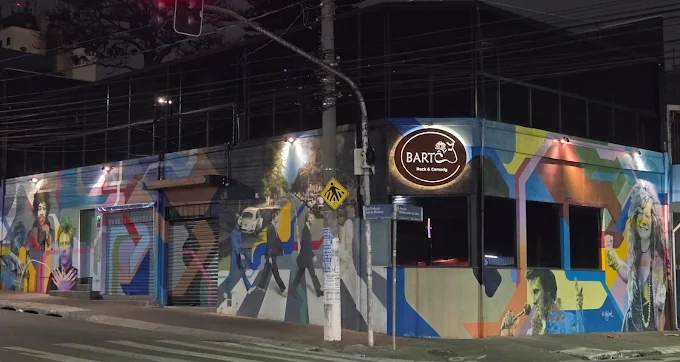

📲
Agenda organizada
Parceiros combinados por janela operacional, conforme a necessidade do BARTÔ.
Você comentou que precisa de entregador. A ideia aqui é simples: apresentar como a Osasco Express pode apoiar a rotina do BARTÔ com parceiros autônomos, agenda organizada, suporte operacional e fechamento claro.

Proposta para a operação
O objetivo é dar mais clareza para a Andrea sobre quem está disponível, quais janelas precisam de apoio, como acompanhar a rotina e como conferir os fechamentos sem confusão.
Parceiros combinados por janela operacional, conforme a necessidade do BARTÔ.
Em caso de indisponibilidade, a Osasco Express aciona a rede para recompor a operação.
Diárias, taxas e entregas organizadas para conferência.
Por que isso importa
Pedido acumulado, parceiro indisponível, raio mal combinado ou falta de rotina acabam caindo no atendimento do restaurante. A proposta é reduzir esse tipo de desgaste com mais organização antes do problema aparecer.
Janelas combinadas e rotina mais previsível para o dia a dia.
Acompanhamento operacional e suporte para ajustes.
Separação entre gestão mensal, diárias e taxas de entrega.
Método Osasco Express
A implantação não precisa ser complicada. A Osasco Express organiza os canais, alinha as janelas, aciona parceiros e acompanha os primeiros dias para ajustar a rotina.
Entendemos canais, horários, dias de maior movimento e raio de atendimento.
Definimos as janelas operacionais e organizamos a disponibilidade dos parceiros.
Acompanhamos os primeiros dias para reduzir falhas e ajustar a rotina.
Conferência organizada das diárias, entregas e taxas realizadas.
Próxima conversa
A proposta não precisa nascer travada. A próxima conversa serve para alinhar horários, volume por canal, raio e início da operação. Se a Andrea tiver relatórios dos últimos 60 dias, melhor ainda: eles ajudam a definir a estrutura com mais segurança.
iFood, 99, Keeta e próprio.
Janelas que realmente precisam de apoio.
Distância, taxa e tempo de ciclo.

Segurança operacional
A relação é entre empresas, com atuação de parceiros autônomos, agenda de disponibilidade e aceite operacional. Isso ajuda a organizar a rotina sem confundir prestação de serviço com vínculo direto com o restaurante.
Relação comercial entre BARTÔ e Osasco Express.
Atuação por disponibilidade e aceite operacional.
Janelas combinadas para organização da rotina.
Mais clareza para operação e conferência.
Condições comerciais
Deixei os valores por último para a Andrea entender primeiro a proposta. Aqui estão separados: gestão mensal, diárias dos parceiros e taxas por entrega.
Faixas de referência conforme volume mensal de entregas.
Valor por parceiro, conforme janela operacional combinada.
Valor por corrida realizada, de acordo com distância e período.
A proposta está organizada para facilitar a decisão. Se fizer sentido, alinhamos os detalhes da operação e o melhor formato de início.
Falar com a Osasco Express